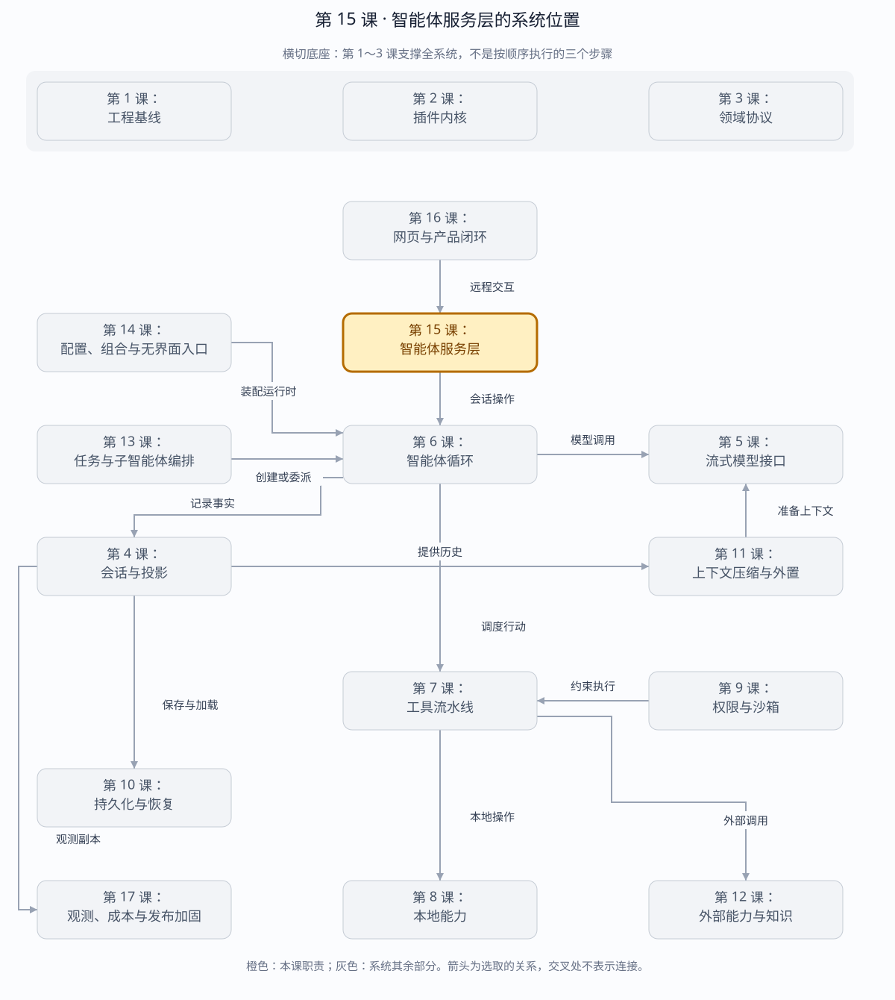

第 15 课：Agent Server
Agent Server 位于 Client 与 Agent Runtime 之间：它不是 Agent Loop 的别名，而是网络信任边界、多 Session 路由器、命令控制面和事件数据面。
章节概览（可选）：三框架职责摘要
本章对比：DeepSeek Harness / DeepAgents / OpenHands
口径：DeepSeek 依据本地原仓库（99f6f02fecdb），不是 harness-lab；deepagent 按 LangChain DeepAgents 理解；OpenHands 对比当前 Software Agent SDK，不混用旧 V0。在线资料核对于 2026-08-28，描述文档能力，不代表已在本实验室安装或测试。没有依据的同名能力不强行等同。
三者的关键区别：三者都有可对应的服务化边界，但原版 DeepSeek 的 Host、DeepAgents 的部署层与 OpenHands Agent Server 不是同一个包级抽象。（基于上述依据的归纳）
本章在全系统中的位置
客户端与服务端运行时之间的远程边界，负责调用、连接和事件传输。
下面是本课程的概念地图，不是某框架的逐包调用图，也不表示实验室已默认装配全部能力。三套框架的实际对应关系见上方横向对比表。
全系统定位 · 橙色高亮第 15 课
打开大图 · Mermaid 图源
| 上游与输入 | 创建会话、发送消息、取消、查询历史与订阅等客户端请求。 |
|---|
| 下游与输出 | 宿主操作结果、会话事件和连接状态。 |
|---|
| 不归本章负责 | 远程 API 不替代循环；可达性限制不等于用户认证，部署前要单独检查信任边界。 |
|---|
| 放进具体场景 | 网页发消息后断线，服务端会话不应依赖页面组件存活；重连需恢复订阅与历史视图。 |
|---|
接着看下方「可视化图解」：局部模块图解释职责，时序图解释一次调用，分支图解释异常与边界。
本课导览
| 包含内容 | 令牌鉴权、JSON-RPC 命令、多会话路由、SSE 事件流、幂等、背压和优雅停机。 |
|---|
| 涉及模块 | AgentServer、RPC 分派器、会话宿主注册表、SSE 连接、HeadlessHost。 |
|---|
| 白话解释 | 它像智能体运行时的网络前台：先验身份，再把命令送到正确会话，并持续把新事件推给客户端。 |
|---|
| 解决的问题 | 让远程客户端安全、幂等地控制多个智能体会话，并在断线、慢消费者和服务重启时保持事件连续。 |
|---|
点击下面的概念名称，可直达该概念的三框架实现、区别与依据。原有能力清单、示例和验收描述面向 harness-lab 教学实现；不要将其直接当作上游框架能力声明。
完整能力清单
| 能力 | 完整行为 | 网络边界 |
|---|
| 持有者鉴权 | 在任何 RPC 分派、事件读取或附件访问前验证 Bearer 令牌。 | 未授权请求不能探测会话是否存在。 |
| RPC 控制面 | 创建、恢复、发送、运行、取消、快照和关闭会话，返回稳定结果或错误。 | 严格校验请求结构和方法参数。 |
| 请求幂等 | 按请求标识缓存同一命令结果，支持客户端安全重试。 | 同一标识绑定不同命令时报冲突。 |
| 多会话路由 | 以会话标识定位独立宿主和运行状态，并隔离并发命令。 | 同一会话运行中再次发送被忙碌错误拒绝。 |
| SSE 数据面 | 从指定序号重放历史后追尾实时事件，SSE 事件标识等于 Session 序号。 | 客户端可凭最后序号无缝续传。 |
| 资源预算 | 限制 RPC 请求体和 SSE 单帧大小，并处理慢消费者。 | 请求超限返回 413，帧超预算主动断开。 |
| 恢复与停机 | 服务关闭时取消运行、关闭连接、刷盘并释放宿主；新服务可冷恢复。 | 网络层不是恢复事实源。 |
| 同源网页与附件 | 可挂载静态网页、附件上传和鉴权读取入口。 | 静态路径防逃逸，API 始终保留鉴权。 |
主概念深挖：Agent 网络服务层
Agent Server 的上游是 CLI、Web 和 SDK 客户端，下游是 Headless Host 与 Session；它把进程内用例扩展成经过鉴权、路由、幂等和背压控制的网络协议。
Client（Bearer、requestId、command）
│ JSON-RPC 控制面（输入）
▼
Auth ─► Idempotency ─► Session Router ─► HeadlessHost / Agent
│ append events
▼
Client ◄──── SSE 重放 + 追尾（输出） ◄── Session Log
│ after=lastSeq
└─ 断线后续传
附件与静态网页走独立路由，但共享鉴权和路径边界
| 背景与目的 | 进程内 Agent 没有网络身份、请求重试或慢客户端问题；一旦提供远程访问，这些就成为独立且不可省略的服务层职责。 |
|---|
| 输入与输出 | 输入是 Bearer 令牌、RPC 方法、请求标识、参数和 SSE 游标；输出是 RPC 结果/错误、连续事件帧及 HTTP 状态。 |
|---|
| 适用场景 | 网页客户端、远程 SDK、多会话守护进程、断线重连和客户端重试。 |
|---|
| 底层组件 | Bun HTTP Server、RPC 分派、令牌校验、幂等缓存、会话宿主映射、SSE 编码、请求与帧预算。 |
|---|
| 核心逻辑 | 先鉴权再解析命令；requestId 绑定命令摘要和结果；路由到会话宿主执行；事件先按序号重放，再订阅追加；关闭时停止接入并刷盘。 |
|---|
| 权衡 | RPC 与 SSE 双通道比单 WebSocket 更容易分别重试和缓存，但需要管理两个连接语义。 |
|---|
| 方案对比 | REST 轮询简单但延迟和流量高；WebSocket 全双工灵活但恢复协议更自定义；RPC+SSE 利用 HTTP 语义并以 Session seq 天然续传。 |
|---|
场景穷举
网络请求
├─ 无/坏 Bearer → 分派前 401
├─ 新 requestId → 执行并缓存结果
├─ 同 id 同命令重试 → 返回相同结果
├─ 同 id 不同命令 → 冲突
├─ session busy → 拒绝并发命令
├─ SSE after=N → 重放 N+1..末尾 → 实时追尾
├─ 慢消费者/大帧 → 断开保护服务
├─ 请求体超限 → 413
└─ shutdown → 停接入、断流、取消、flush、dispose
| 场景 | 控制面 | 数据面 |
|---|
| 首次发送 | RPC 返回接受或轮次结果。 | SSE 按 Session seq 推送事实事件。 |
| 响应丢失重试 | 相同 requestId 返回缓存结果。 | 不会产生第二组事件。 |
| SSE 断线 | 无命令状态变化。 | 客户端以 lastSeq 重新连接并补齐。 |
| 多会话 | 路由到独立 HeadlessHost。 | 订阅只接收目标 Session。 |
| 冷重启 | 新宿主按 id 恢复。 | 历史从持久日志重放，不从旧连接恢复。 |
| 恶意输入 | 鉴权、结构和体积检查先于领域调用。 | 帧预算防止单事件拖垮缓冲区。 |
多方案对比
| 协议 | 命令 | 事件流 | 恢复复杂度 |
|---|
| REST+轮询 | 标准。 | 延迟高、重复传输。 | 低。 |
| WebSocket | 双向同连接。 | 实时。 | 需自定义关联、重放和背压。 |
| JSON-RPC+SSE | requestId 天然关联。 | 单向事件流适合 seq 续传。 | 中，两个通道但职责清楚。 |
| 消息队列 | 异步、可持久。 | 订阅能力强。 | 运维和客户端接入更重。 |
关键设计反问
- 为什么鉴权必须早于“会话不存在”判断？
- 否则未授权调用者能通过响应差异枚举有效会话标识。
- 为什么 requestId 还要绑定命令摘要？
- 只按 id 缓存会让客户端错误复用 id 时拿到无关旧结果，掩盖严重调用方缺陷。
- SSE 慢消费者为什么可以被断开？
- 事件已有持久日志，客户端可按序号重连；无限为单连接缓存反而会拖垮所有会话。
完整分层
CLI / Web / SDK Client
│ Bearer + JSON-RPC / SSE
▼
┌──────────────── Agent Server ────────────────┐
│ auth │ envelope │ idempotency │ backpressure│
│ session router │ active ownership │ shutdown│
└───────────────────┬──────────────────────────┘
│ HeadlessHost API
▼
Agent Registry / Agent Loop / Inbox
│
Session Event Log + Projections
│
JSONL/SQLite + Attachment/Spill stores
持有者鉴权：三框架分别怎么做？
同一个问题：能连接服务端，就等于拥有某个会话吗？
这个概念的区别：可达性、服务认证和资源授权要分别验证，不能用 CORS 或一个会话 id 替代。
多会话路由：三框架分别怎么做？
同一个问题：一个服务怎样找到正确的会话运行对象？
这个概念的区别：路由身份、运行身份与配置身份应分开，尤其不能让旧客户端对象指向另一个新运行。
同源网页与附件：三框架分别怎么做？
同一个问题：浏览器能上传文件，就能安全访问所有本地文件吗？
这个概念的区别：上传通道、附件身份、文件访问边界与浏览器来源校验必须独立审查。
控制面与数据面分开
| 接口 | 用途 | 关键语义 |
|---|
POST /rpc | create/resume/send/cancel/snapshot/close | JSON-RPC 2.0、request id 幂等、结构化错误 |
GET /events | Session Event replay + tail | SSE id=Session seq、Last-Event-ID、队列预算 |
RPC 控制面：三框架分别怎么做？
同一个问题：客户端方法怎样映射到服务端能力？
这个概念的区别：比较控制面要看公开能力白名单、身份解析和协议校验，而不只看是否用了 HTTP。
SSE 数据面：三框架分别怎么做？
同一个问题：浏览器持续接收事件的实际协议是什么？
这个概念的区别：区分传输协议、事件数据格式和重连游标；都能“流式显示”不代表客户端可互换。
一次远程 Turn
Client ─ session.send(id=42) ─► Server
Server ─ auth/fingerprint/route ─► active Conversation
Conversation ─ Inbox → Agent.run ─► Session.append(seq=N...)
Session ─ committed event ─► SSE clients
Agent ─ turn/end ─► flush/fsync
Server ─ RPC result ─► Client
重复 id=42 + 相同 params：复用同一 pending/final response
重复 id=42 + 不同 params：IDEMPOTENCY_CONFLICT
请求幂等：三框架分别怎么做？
同一个问题：超时重发一次请求，会不会执行两次？
这个概念的区别：需分别检查重复提交去重、并发运行策略和外部工具副作用；任一层成立都不能替代另两层。
恢复在哪里发生
session.resume 通过 HeadlessHost 调用 Session Store：checksum、torn-tail repair、interrupted closer、投影重放，再发布 active Conversation。Agent Server 的幂等缓存、SSE 连接和 live Agent 都是易失控制状态，不是恢复源。
恢复与停机：三框架分别怎么做？
同一个问题：连接恢复与运行恢复分别发生在哪一层？
这个概念的区别：停机需明确停止准入、运行收敛与存储完成；重连成功只能证明传输恢复。
背压与停机
- SSE 每个连接有独立字节队列；单帧或积压超预算立即断开慢消费者。
res.write() 返回 false 时等待 drain/close，不无限写入内存。- Server close 先停止接收和关闭 SSE，再取消 running Agent，flush/close conversations，最后 dispose Host。
资源预算：三框架分别怎么做？
同一个问题：请求、运行和执行环境的上限由谁控制？
这个概念的区别：至少分别验收入口内存、运行并发和执行资源；一个 max 值不能覆盖整条链路。
运行与调试
cd harness-lab
bun run demo:server
VS Code F5 → 14 · 智能体服务
# 推荐断点
# AgentServer.#authorize：网络信任边界
# #rpc：body 限制与幂等表
# #dispatch：多 Session 路由
# #events / SseClient.#enqueue：replay+tail 与背压
# close：取消、flush、Host dispose 顺序
验收证据
真实随机端口测试覆盖：错误 token、幂等 replay/conflict、多 Session 隔离、并发 busy/cancel、SSE replay+tail、body 413、SSE 背压断开，以及 Server 关闭后另一个 Host 冷恢复。
源码
下一课实现 Web Client 与生产闭环：客户端投影、断线重连、乐观命令状态、审批 UI、附件上传和端到端恢复。
返回完整路线 →